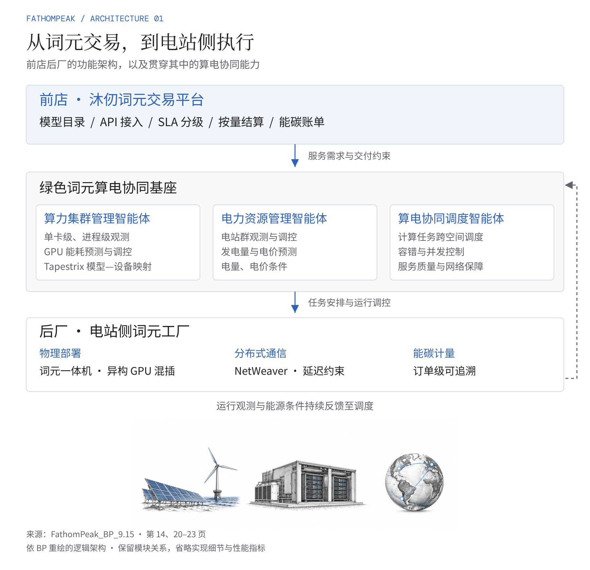
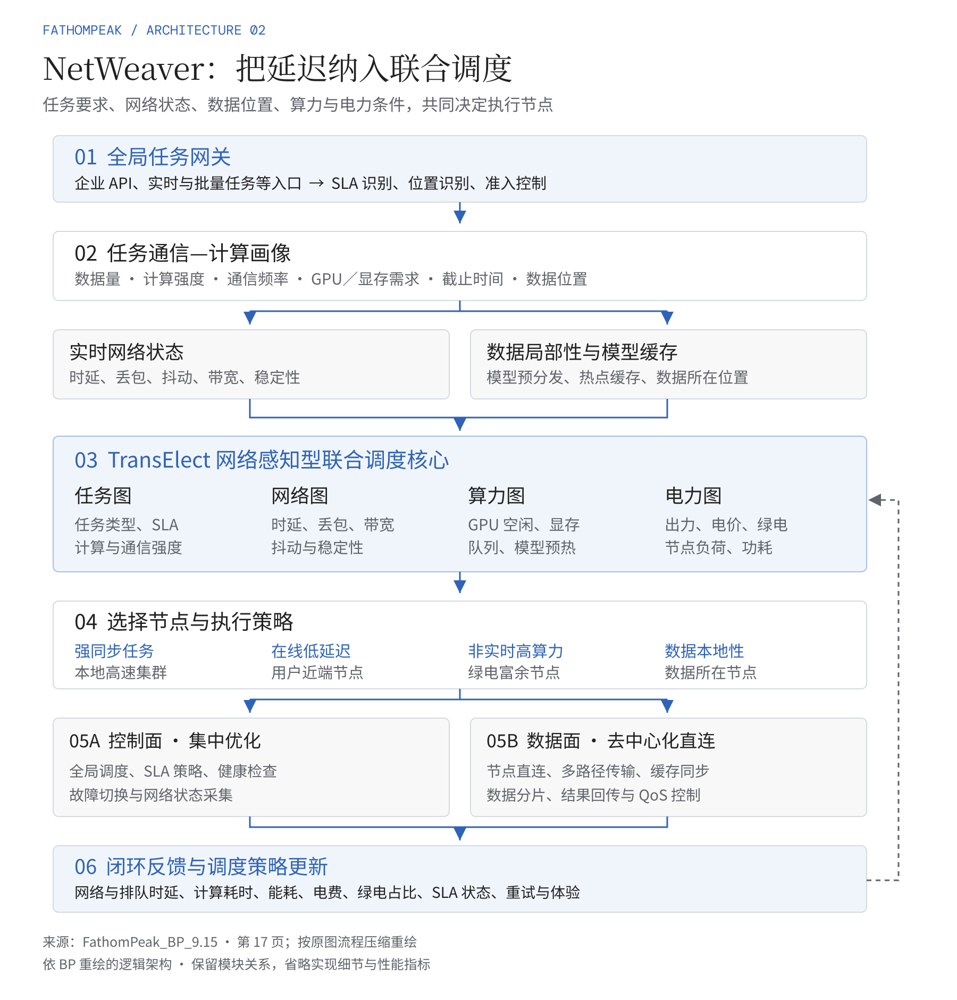
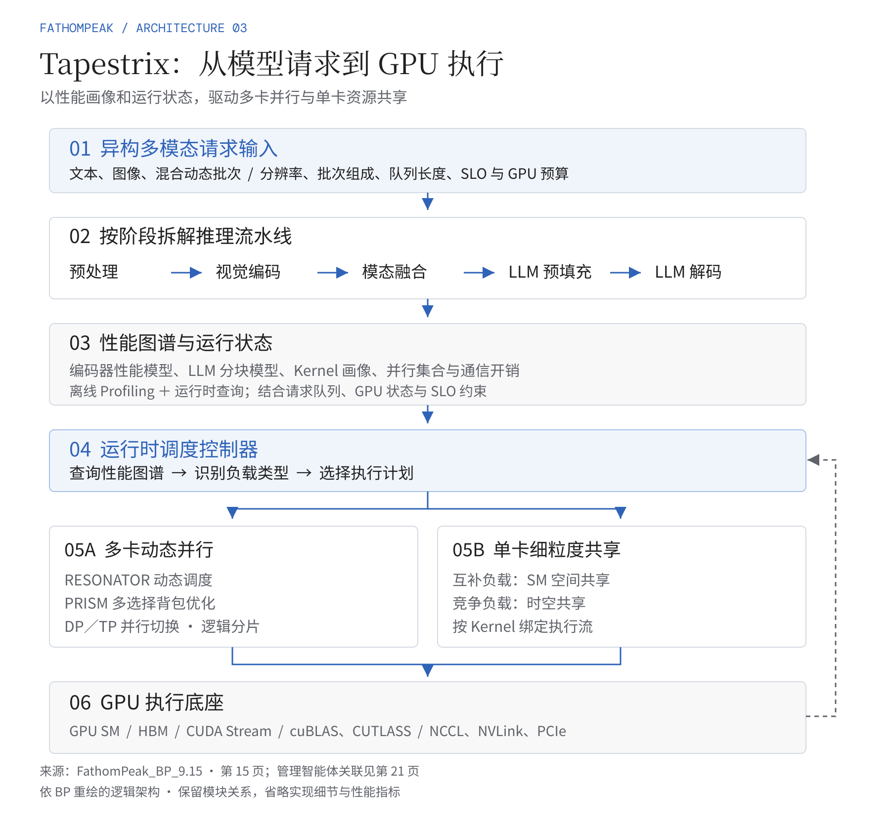

FATHOMPEAK / BP ARCHITECTURE / 2026.10.20
把 BP 中的技术，画进文章。
从整体架构，到跨节点调度，再到 GPU 执行。三张图均依据公司 BP 重绘。
两篇微信参考文章仍读取受限，未确认其配图数量。架构依据来自 BP 第 14、15、17、20–23 页；蓝色箭头表示流程或功能关系，灰色虚线表示反馈。
整体架构：前店后厂与三个智能体



NetWeaver：跨节点联合调度



Tapestrix：模型请求到 GPU 执行



SVG 保留可编辑文字和箭头；整体图底部线稿为 ImageGen 位图。性能数字与排名未纳入本次图稿。